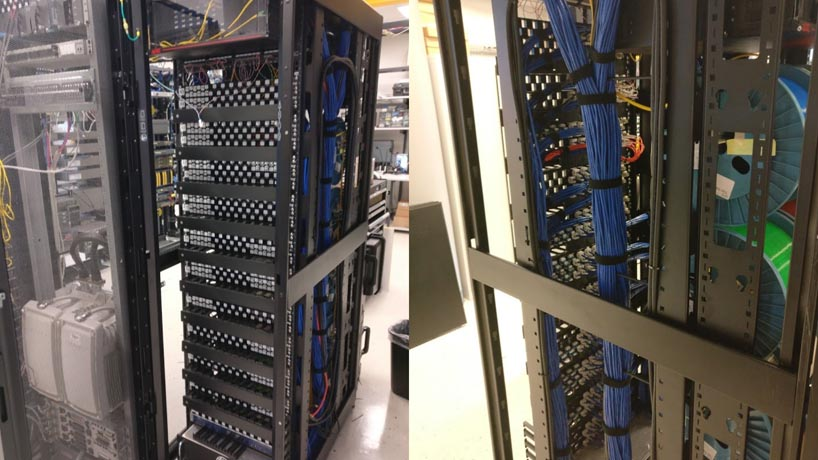
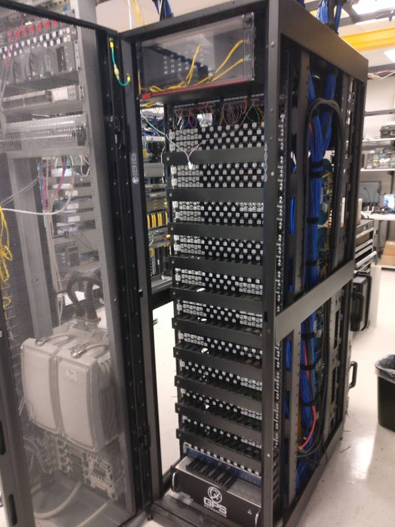
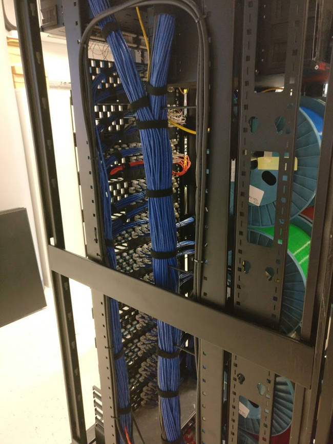
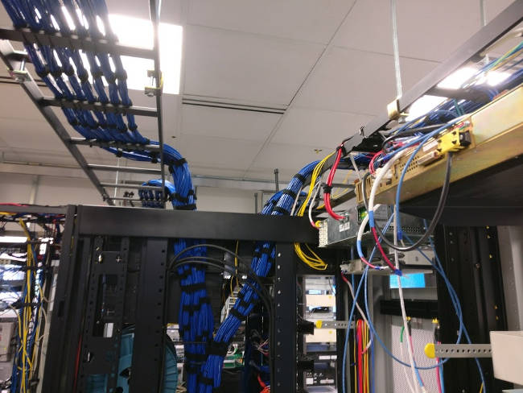
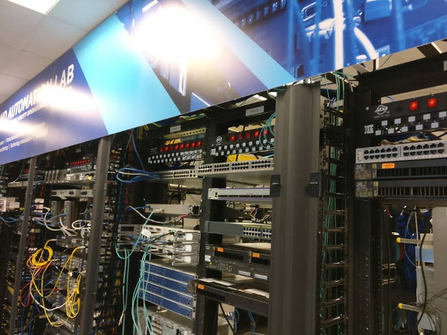
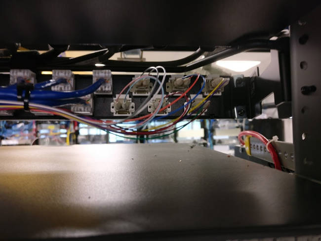

Maeve Stites
Electrical and Computer Engineering major at
Olin College of Engineering
Pronouns: they/them
Patch Panel Project
Overview
I led a patch project install at the Burns & McDonnell Networking, Integration, and Automation (NIA) lab to reduce errors and increasing efficency. I managed the patch panel project and installed the patch network. This resulted in a decrease in engineering hours for lab testing and a safer lab environment.
My Role
- Project planning - I planned the timeline for this project and did the preliminary research into the feasibility of different options for the patch network.
- Running team meetings - I had check-ins and planning meetings with the lab director, the NIA projects director, and other NIA engineers to give updates as well as take inputs and suggestions for the project.
- Managing material lists - I sourced all of the materials for the patch network. This included patch panels, keystones, cabling, connectors, cable management accessories, cable runways, and tools.
- Managing a $10,000 budget - Along with creating a materials list, I also worked to source items that would keep this project under budget.
- Installation - I installed the whole patch network. This included installing patch panels, installing keystones, running cables, terminating connectors, cable management, and continuity testing.
Documentation and Details
The main patch cabinet front. The GPS splitter and clock are at the bottom.
The inside of the main patch cabinet. I managed all of the cables coming into this cabinet.
The other side of the same patch cabinet.
One of three rows of racks in the lab. You can see the patch panels at the top of the racks (You can also see how messy the cable management has been up to this point).

Cable management on the back of some of the patch panels.
A close up of the rear of one of the patch panels.